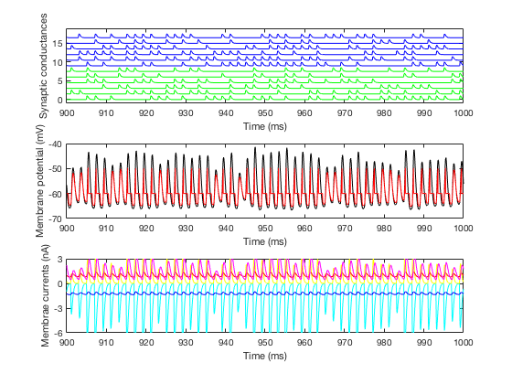

This is the readme for the models associated with the paper:
Michiel W.H. Remme, John Rinzel, Susanne Schreiber Function and energy consumption constrain neuronal biophysics in a canonical computation: coincidence detection PLoS Computational Biology 2018
The model is of a single neuron from the auditory brainstem (from the MSO nucleus). It is written in C-code that is run and analyzed from Matlab.
Demo: Type Full_run_demo on the Matlab command prompt. After the MEX files are compiled you should see text output and prompts to run a few more times, accompanied by a graph with similar traces as displayed in Figure 2A in the paper, for example:Full_run_demo Building with 'Xcode with Clang'. MEX completed successfully. ITD = 0 ms EPSG amplitude = 0.0196 uS 372 spikes in 1000 ms Press a key for the next simulationIs accompanied with the graph: 